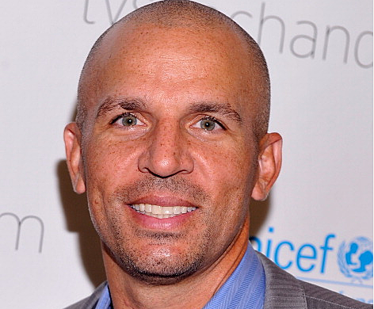
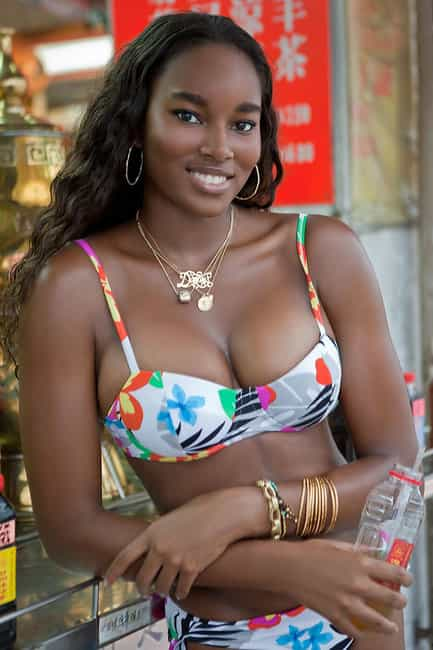

< < < Back
Black Or African-American? – Return Of Kings
Though I stopped watching the news quite some time ago I’m still able to stay up to date on the day’s current events through friends, acquaintances, updates on my phone, et al. This principle held true when fellow columnist Blair Naso recently made me aware of some criticism CNN has taken of late for referring to French hostage taker, Amedi Coulibaly, as “African American.”
Some say he should have been referred to as black, some say he should have been referred to as African-French, and some say it doesn’t matter. I didn’t dig too deep into this story but it definitely got me thinking about the age old-debate over what Blacks or African-Americans in this country wish to be called: Black or African-American.
Two Schools Of Thought: Nationality vs. Race
The debate over what black people in this country prefer to be called sometimes boils down to nationality versus race. Nationality being African-American, race being black.
People who argue on the nationality side cite the importance of not rejecting one’s heritage using the adages such as “never forget where you come from,” “don’t forget the motherland” and the like. Proponents of this vernacular also state that it has a more positive connotation inside and outside the black community (more on that later).
However, this side of the debate raises a fair amount of questions including but not limited to:
Should we call white people German-American, Polish-Americans, or whatever bloodlines they come from?
How are we supposed to know a person’s nationality?
Why do people assume all blacks originate from Africa? What about those who don’t?
Do we ask everybody?
And this is what brings us the the other side of the coin, which is race. Advocates of the designation “Black” often state that it’s an easier, less invasive way of allusion. Rather than trying to be PC by guessing a person’s nationality and perhaps being incorrect, they would rather just mention a person’s race.
For example, persons of Hispanic or Latino descent sometimes take offense to being referred to by the wrong nationality. I dated a few Puerto Rican girls when I lived in New York City who detest being mistaken for a Dominican and I dated one Mexican girl who got visibly aggravated when the waitress asked her if she was from Guatemala.

Puerto Ricans are a proud people
This doesn’t happen all the time, but I’ve seen it enough to get my attention. The one exception is game application. Latinas love when men playfully guess their nationality because it allows them to be mysterious, coy, and chased which makes them feel feminine and will make them receptive to game and escalation. Plus it’s a great conversation starter when hitting on hot mamis.
There are also generational implications. Those on this side of the argument state that they prefer to be referred to as black because they were born and raised in America. Hyphenated nationalities, in their minds, pertain only to those who immigrated to this country like Irish-Americans or Italian-Americans.
On the other hand, how weird would it be to hear someone say “Yeah, go talk to the yellow guy at XYZ store if you want the best deal,” when talking about an Asian? How odd would it be to describe someone of Native-American descent as “a red guy?”
Truth is the only color label that doesn’t sound weird when used is black because the moniker “person of color” in America most likely refers to someone who is black even though Indians, Mexicans, Samoans, other Pacific Islanders, and Hispanics have a darker hue to their skin.
Whatever side of the argument one finds themselves on, one element that cannot be argued are the…
Social Implications
In Part 2 of my Villains Series, I mentioned the fact that I was friends with a guy who was a cop for quite a while. He was a cool guy and was always brutally honest when we peppered him with questions about being a cop. He never pulled punches, never ducked questions, and always kept it 100. He answered ’em all no matter what they were.
I remember him telling us that when any given suspect was referred to as a “black male” his partner and now life-long friend was always bothered by this description. It wasn’t that the description was inaccurate, it was that the phrase “black male” carried a negative connotation with it and had the potential to alter the mindset of the responding officers.
“Don’t mistake me,” he said, “I’m not sayin’ when we get the call with that description we see red and get ready for a gun fight but it did make a small difference in our mindset. Even with Harrison (his partner).”

Descriptions make a difference…even with black cops
This article is one of many that backs this notion:
In one study, we randomly assigned white participants to associate words with either blacks or African-Americans. Specifically, they selected 10 terms out of a list of 75 (e.g. aggressive, ambitious) that they felt best described each group. The participants that evaluated blacks chose significantly more negative words than those who evaluated African-Americans. Notably, whites did not associate more negative words with “Whites” than with “Caucasians.
I’m not one that puts too much stock in “studies” or “research” but it would be disingenuous not to admit that there is some truth to this. As uncomfortable as it is for some people to hear, the word “black” when used to describe a black person often conjures up negative emotions both consciously and subconsciously—even with black people.
But the term African-American can sometimes sound pretentious or try hard. For example:
“She only dates black guys.” This statement can elicit or imply negativity for many reasons (which is a whole ‘nother article).
“She exclusively commingles with African-American Males.” Okay, so that was a little over the top but you get the idea.
I suppose there’s a happy medium out there somewhere and non-blacks in this country struggle to find this balance on a daily basis. Being labeled a racist is the new scarlet letter and most people avoid it like the plague. Naso, who hails from the South, confirmed as much during our conversation:
I’ve found that people here are terrified of being labeled racist.
Having lived all over the U.S. myself, including the South, I know Blair is right on the money. But that same fear permeates the entire nation regardless of region so the fear is real. So much so that a good segment of the population feels that even using the word “black” to describe a black person will be construed as racist so they skew more toward African-American or a softer description such as “brother” or “sister” as their preferred rendition for describing a person of color if they don’t shy away from any descriptions altogether.
The bottom line is that for people who overly concern themselves of the opinions of those around them this can be catch-22 on many different levels. In their minds, you’re damned if you do, and damned if you don’t.
What Do Black People Think?
50 years ago this would have been a very easy question to answer, but the melting pot that the U.S. has become over the last half century makes this a much more complicated one.
Mixed race people often feel they’re being forced to choose between two labels that don’t accurately describe them. Choosing to be called either one effectively eliminates the contribution of the other to their ethnicity.

Jason Kidd’s father was black, his mother was white
The same goes with black people whose bloodlines trace back to places other than Africa such as the Caribbean, Brazil, or Central American countries like Panama and Nicaragua. Choosing one or the other, completely omits their own nationalities which they are very proud of.

Dark-skinned Brazilian
As far as American blacks (like myself) are concerned, it’s probably about a 50/50 split. As stated above I’ve heard good and bad arguments on both sides of the fence. Walking into any barber shop in a black neighborhood and posing this question always makes for a lively and spirited debate.
And then there are white people who were born and raised in Africa. A former co-worker of mine lived in Johannesburg, South Africa from the day he was born until he moved stateside at 25. He regularly called himself an African-American and felt no shame in doing so and according to him a good number of white African immigrants refer to themselves as such.
Charlize Theron is a white African-American
So what do black people think? It depends on who you ask.
Does it matter?
Personally, I don’t give a shit how people label me or refer to my race, nationality, ethnicity or whatever else when describing me. As far as I’m concerned black people, more specifically men, that spend time and energy trying to beat their personal preference into the minds of society at large are betas who are displaying solipsism at a feminist level.
Men of all races who are confident and have a strong sense of who they truly are (read: alpha) have no problem with saying or being called “That white guy” or “That black guy” because they know it doesn’t matter in the grand scheme of things. The more shits you give about something as inconsequential as a superficial label, the less you have going on in your life. To put it bluntly they’ve got better shit to do than to sit around and bitch about name classifications and I count myself in that group.
Having a preference is perfectly fine. But putting in too much time, effort, or emotion into something like this is a waste of time.
The short answer to this question is that it only matters as much as a person allows it to. That sounds cliche but it’s true. Case in point: I’ve been called black, African-American, a brother, a brotha, a nigga, and a nigger and none of those affected my life in the least because I don’t allow it to.
Maybe being called the dreaded n-word would have ruffled my feathers a bit more if I had a different upbringing, but the fact that I wasn’t exposed to racial issues on account of being raised on military bases may have a lot to do with my lack of sensitivity to this silly attempt to enrage me.
Now I can certainly understand how titles or labels can affect people. Especially when one has grown up around it and have had negative experiences related to those descriptions. But at some point in life we all have to decide not to let certain things like this control our behavior or emotion. Some of these will be easier than others but doing this helps create mental strength and frame.
So now I pose these questions to men of all races. Do you prefer to be labeled according to race, your ethnicity, your nationality or something else? How much does it matter to you if at all? What do your immediate and distance family members think and why? What have you heard from friends and acquaintances of different races?
Read Next: The Next Fifty Years Of Race And Culture In America